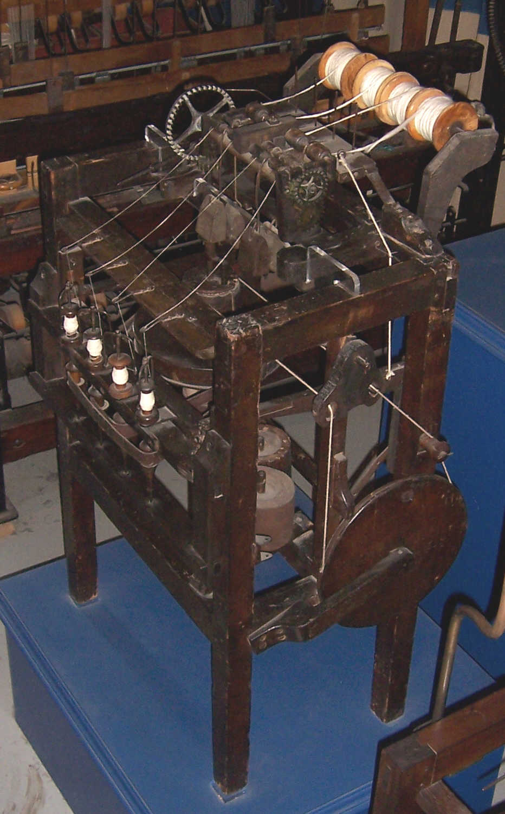
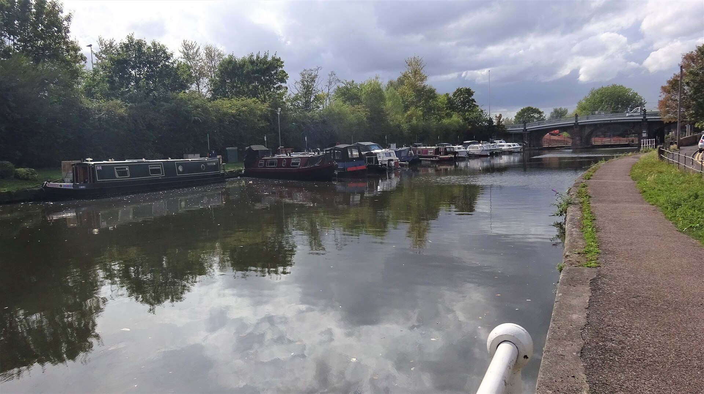
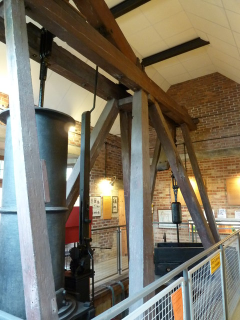
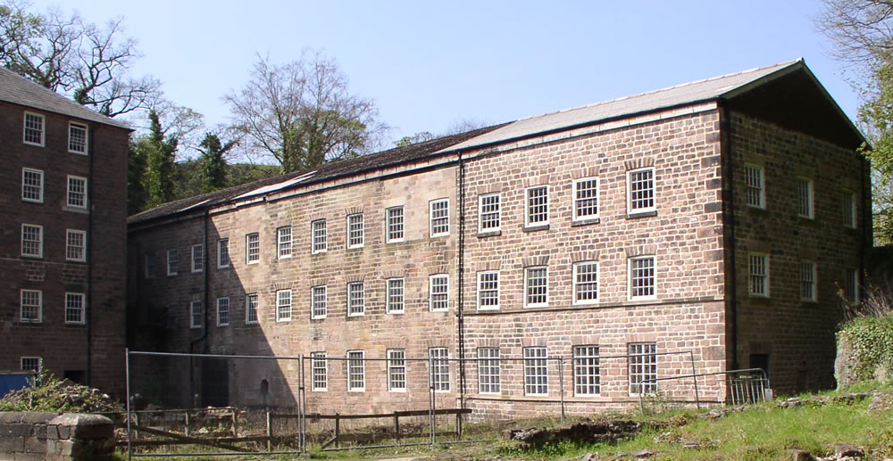

Überblick
Vorbedingungen & Anfänge bezeichnet die erste Phase der Industriellen Revolution in Großbritannien (ca. 1760–1800). In diesen Jahrzehnten verdichteten sich ältere Agrar-, Handels- und Technikentwicklungen zu einer neuen Produktionsweise: Mechanisierung der Textilverarbeitung, Ausbau von Wasser- und später Dampfkraft, Kanäle und frühe Fabriken. Der Übergang war regional, sektoral und zeitlich ungleichmäßig. Baumwolle und Wasserkraft standen zunächst im Vordergrund; Dampf, Kohle und Eisen wurden bedeutsam, waren aber um 1800 noch nicht überall dominant.
Warum Großbritannien zuerst? Die Forschung betont kein einzelnes „Wunder“, sondern eine Konstellation: steigende Agrarproduktivität und Bevölkerungsdruck; Kohle nahe industriellen Zentren; Kolonial- und Atlantikhandel (Rohbaumwolle, Märkte, Kapital); Finanzinstitutionen und Kredit; ein Patent- und Rechtsrahmen, der Erfindungen belohnte; sowie ein Reservoir an Handwerkern, Uhrmachern und Ingenieuren. Relative hohe Löhne bei vergleichsweise billiger Energie (vor allem Kohle) motivierten laut ökonomischen Deutungen arbeitsparende, energieintensive Technik. Andere Länder besaßen Teilfaktoren, aber nicht dieselbe Kombination von Marktgröße, Institutionen und Faktorpreisen.
Die Datierung um 1760 ist konventionell und rückblickend. Viele Voraussetzungen reichen tiefer: Newcomen-Maschinen ab etwa 1712, Kays Weberschiffchen 1733, Bank of England 1694, parlamentarische enclosure-Gesetze und Agrarreformen über das ganze 18. Jahrhundert. Um 1800 war die Fabrik noch nicht die Normalform aller Gewerbe; Handwerk, Heimarbeit (putting-out) und Wassermühlen bestanden fort. Dennoch war die Richtung klar: von der ländlichen Heimspinnerei zur zentralisierten Maschinenspinnerei, von lokalen Transportengpässen zu einem wachsenden Binnenwasserstraßennetz, vom Experiment zur skalierbaren Produktion.
Akteure
- John Kay (1704–um 1779): Weber und Erfinder; 1733 patentiertes fliegendes Weberschiffchen (flying shuttle), das die Webgeschwindigkeit erhöhte und den Garnbedarf steigerte.
- James Hargreaves (um 1720–1778): Erfinder der spinning jenny (entwickelt um 1764, patentiert 1770); mehrspindlige Handspinnmaschine, vor allem in der Heim- und Kleinwerkstatt einsetzbar.
- Sir Richard Arkwright (1732–1792): Unternehmer und Patentinhaber der water frame (1769); baute ab 1771 die Spinnerei in Cromford (Derbyshire) und gilt als zentrale Figur des frühen Fabriksystems.
- Samuel Crompton (1753–1827): Erfinder der spinning mule (1779), einer Hybridmaschine aus Jenny und Water Frame für feineres, stärkeres Garn; selbst wirtschaftlich wenig profitierend.
- Edmund Cartwright (1743–1823): Geistlicher und Erfinder; patentierte 1785 einen mechanischen Webstuhl (power loom). Die breite kommerzielle Durchsetzung folgte erst im frühen 19. Jahrhundert nach Verbesserungen.
- Thomas Newcomen (1664–1729): Baute um 1712 die atmosphärische Dampfmaschine zur Grubenentwässerung; Grundlage späterer Dampftechnik, aber energetisch ineffizient.
- James Watt (1736–1819) und Matthew Boulton (1728–1809): Watt patentierte 1769 den separaten Kondensator; ab 1775 Partnerschaft Boulton & Watt in Birmingham. Verbesserte Pumpen und ab den 1780er Jahren rotierende Antriebe für Gewerbe.
- Francis Egerton, 3. Duke of Bridgewater (1736–1803), und James Brindley (1716–1772): Auftraggeber bzw. Ingenieur des Bridgewater-Kanals (eröffnet 1761), Vorbild der britischen Kanalära.
- Kaufleute, Baumwollimporteure und Provinzbanken: Kapitalgeber und Abnehmer; Londoner Finanzmarkt, Bank of England (1694) und wachsendes Provinzbankwesen.
- Arbeiterinnen und Arbeiter, Heimspinnerinnen, Weber, Bergleute, Kinder: Trugen die Produktion und erlebten Disziplin, lange Schichten und Einkommensunsicherheit; teils Protest (Maschinensturm gegen Jenny und Fabriken).
- Parlament und Grundbesitzer: Durch enclosure acts, Kanal- und Straßenakte sowie Patentrecht gestalteten sie den institutionellen Rahmen.
Was geschah
Agrar- und Bevölkerungsgrundlagen
Im 17. und 18. Jahrhundert stiegen in England und Wales Agrarproduktivität und Bevölkerung. Neue Fruchtfolgen, Futterpflanzen (Klee, Turnips), selektive Viehzucht und Marktintegration erlaubten mehr Nahrung pro Fläche und pro Arbeitskraft. Die oft so genannte „Agrarrevolution“ war kein plötzlicher Bruch, sondern ein langer, regional differenzierter Prozess. Sie schuf Spielräume für Städte und Gewerbe: Weniger Menschen mussten unmittelbar auf dem Land ernährt werden, während die Nachfrage nach Textilien und Konsumgütern wuchs.
Enclosure (Einhegung) verdichtet den Wandel, darf aber nicht vereinfacht als alleinige „Arbeiterlieferung“ an die Fabrik gelesen werden. Gemeinsames Weide- und Flurland wurde in privat bewirtschaftete Parzellen überführt, zunehmend durch parlamentarische enclosure acts im 18. Jahrhundert. Produktivität und marktorientierte Großbetriebe nahmen zu; zugleich verloren viele Kleinbesitzer und Nutzungsberechtigte Allmenderechte. Migration, saisonale Lohnarbeit und Bevölkerungsdruck spielten neben Einhegung eine Rolle. Die Forschung warnt vor einer monokausalen Erzählung „Bauernvertriebung → Fabrikarbeiter“: Der Übergang war ungleich, oft schmerzhaft und politisch umkämpft, aber eingebettet in breitere Agrar- und Demografieveränderungen.
Handel, Kapital, Institutionen
Großbritanniens Atlantik- und Kolonialhandel lieferte Rohstoffe (vor allem Baumwolle aus den Amerikas und später anderen Regionen), Absatzmärkte und Gewinne. Merkantilistische Politik, Navigation Acts und Kriegsflotten sicherten Handelswege; der Sklavenhandel und Plantagenökonomie gehörten zur dunklen Seite dieser Kapitalakkumulation. London wurde zum Finanzzentrum: Staatsanleihen, Versicherungen (u. a. Lloyd’s), Wechsel und Aktien erleichterten langfristige Investitionen. Die Bank of England (1694) und ein Netz von Provinzbanken stellten Liquidität bereit; Partnerschaften und Kredit finanzierten Mühlen, Kanäle und Maschinen.
Institutionell wirkten relativ sichere Eigentumsrechte, ein Parlament, das Infrastruktur und Einhegung per Privatgesetz ermöglichte, sowie das Patentsystem (Statute of Monopolies 1624, im 18. Jahrhundert intensiver genutzt). Patente schützten nicht immer den tatsächlichen Erfinder und waren teuer und umstritten (Arkwrights Patente wurden angefochten), schufen aber Anreize und öffentliche Dokumentation. Handwerkliche Kompetenz (Uhrwerk, Metallbearbeitung, Mühlenbau) und informelle Wissensnetzwerke in Lancashire, den Midlands und Schottland waren mindestens so wichtig wie formale Patente.
Textil und Mechanisierung

Die Baumwollindustrie wurde zum Leitsektor der Frühphase. Kays fliegendes Weberschiffchen (1733) beschleunigte das Weben und verschärfte den Engpass beim Spinnen. Hargreaves’ spinning jenny (um 1764/patentiert 1770) erlaubte einer Person, mehrere Spindeln zu bedienen; sie passte noch zur Heimarbeit, produzierte aber eher weiches Schussgarn. Arkwrights water frame (Patent 1769) nutzte Walzen und Wasserantrieb, lieferte festes Kettengarn und verlangte zentrale Kraft: Damit verband sich das Fabrikmodell. Cromptons mule (1779) kombinierte Prinzipien von Jenny und Water Frame und erzeugte feines, starkes Garn, das britische Ware international konkurrenzfähig machte.
Cartwrights mechanischer Webstuhl (Patent 1785) zielte darauf, auch das Weben zu mechanisieren. Frühe Ausführungen waren störanfällig; die Massenadoption fiel vor allem ins frühe 19. Jahrhundert. Bis 1800 blieb die Spinnerei stärker mechanisiert als die Weberei. Rohbaumwolle, Wasserläufe und unternehmerische Netze konzentrierten die Expansion in Lancashire, Derbyshire und angrenzenden Regionen. Seide, Wolle und Leinen folgten teils später oder anders; Baumwolle war der Durchbruchsmarkt.
Energie und Transport


Kohle war in Großbritannien seit langem Heiz- und Gewerbebrennstoff, besonders nachdem Holzknappheit den Preisunterschied vergrößert hatte. Newcomen-Maschinen entwässerten Gruben und erweiterten den Kohleabbau, verbrauchten aber selbst viel Brennstoff und lohnten sich vor allem an den Zechen. Watts separater Kondensator (1769) und die Partnerschaft mit Boulton senkten den Kohleverbrauch und erweiterten Einsatzorte: Zinn- und Kupferminen, später Fabriken. Rotierende Dampfmaschinen ab den 1780er Jahren konnten Wellen antreiben. Dennoch: Um 1800 trieben viele Textilfabriken noch Wasserräder; Dampf war aufsteigend, aber nicht flächendeckend „die“ Energie der Epoche.
Transportengpässe bremsten Kohle und Rohstoffe. Der Bridgewater-Kanal (1761) von Worsley nach Manchester senkte Kohlepreise in der Stadt und demonstrierte den Nutzen künstlicher Wasserstraßen. Es folgten zahlreiche Kanalprojekte und in den 1790er Jahren eine „Kanalmanie“. Kanäle, Flüsse und Küstenkabotage verbanden Gruben, Häfen und Mühlen billiger als schlechte Landstraßen. Eisenbahnen lagen noch in der Zukunft; um 1800 war das Kanalnetz der infrastrukturelle Träger der Frühindustrialisierung.
Frühe Fabrik und soziale Folgen

Arkwrights Cromford Mill (ab 1771) und nachfolgende Mühlen bündelten Maschinen, Wasserkraft, Aufsicht und Schichtarbeit unter einem Dach. Die Fabrik war Disziplinierungsraum: Glocken, Regeln, Kinder- und Frauenarbeit, lange Tage. Heimspinnerinnen und Handweber gerieten unter Preisdruck; Maschinensturm und Proteste (u. a. gegen Jenny und Fabriken) zeigten Widerstand. Zugleich entstanden neue Einkommenschancen, Siedlungen an Flüssen und eine unternehmerische Elite. Städte wie Manchester wuchsen; Umweltbelastung, Wohnungsnot und Gesundheitsrisiken nahmen zu, ohne dass der Staat bereits systematisch eingriff.
Sozial war die Phase ambivalent: Reallöhne und Lebensstandards variierten nach Region, Beruf und Jahrzehnt; die berühmte Debatte um die frühe Industrialisierung (Optimisten vs. Pessimisten) spiegelt diese Unsicherheit. Klar ist: Arbeitsorganisation, Zeitregime und die Trennung von Wohn- und Produktionsort veränderten sich dort, wo die Fabrik Fuß fasste. Das putting-out-System verschwand nicht sofort, wurde aber in der Baumwollspinnerei zurückgedrängt.
Beginn
Als Beginn der hier behandelten Blockphase gilt konventionell die Mitte des 18. Jahrhunderts, oft um 1760 angesetzt. Entscheidend sind weniger ein einzelnes Datum als die Häufung: Jenny und Water Frame in den 1760er Jahren, Cromford 1771, Watts Kondensatorpatent 1769 und die Boulton-&-Watt-Partnerschaft ab 1775, Bridgewater-Kanal 1761, paralleles Bevölkerungswachstum und Baumwollboom. Vorläufer (Newcomen, Kay, Agrarwandel, Atlantikhandel) waren notwendig, aber die beschleunigte Mechanisierung und das Fabrikmodell der Textilbranche markieren den Einstieg in die Industrielle Revolution im engeren Sinn.
Ende / Übergang
Um 1800 war die Frühphase abgeschlossen, ohne dass die Revolution „fertig“ gewesen wäre. Spinnerei und Kanäle hatten Maßstäbe gesetzt; Dampfkraft gewann an Boden, war aber noch nicht universell. Der nächste Block verschiebt den Fokus auf die Dominanz von Dampf, Fabrik, Kohle und Eisen im frühen 19. Jahrhundert: leistungsfähigere Dampfmaschinen in Mühlen und Bergwerken, Kokshochöfen und Puddelverfahren, Maschinenbau, wachsende Städte und schließlich die Eisenbahn. Cartwrights Idee des Kraftwebstuhls wird dann breit wirksam; Eisen und Kohle rücken neben Baumwolle ins Zentrum. Damit geht die Phase der Vorbedingungen und textilen Anfänge in die Hochphase der ersten Industriellen Revolution über.
Quellen
- Encyclopaedia Britannica – „Industrial Revolution“: https://www.britannica.com/event/Industrial-Revolution
- Encyclopaedia Britannica – „Industrial Revolution: Key Facts“: https://www.britannica.com/summary/Industrial-Revolution-Key-Facts
- Encyclopaedia Britannica – „spinning jenny“: https://www.britannica.com/technology/spinning-jenny
- Encyclopaedia Britannica – „water frame“: https://www.britannica.com/technology/water-frame
- Encyclopaedia Britannica – „Sir Richard Arkwright“: https://www.britannica.com/biography/Richard-Arkwright
- Encyclopaedia Britannica – „James Watt“: https://www.britannica.com/biography/James-Watt-Scottish-inventor
- Encyclopaedia Britannica – „Thomas Newcomen“: https://www.britannica.com/biography/Thomas-Newcomen
- Encyclopaedia Britannica – „Francis Egerton, 3rd duke of Bridgewater“: https://www.britannica.com/biography/Francis-Egerton-3rd-Duke-of-Bridgewater
- Encyclopaedia Britannica – „agricultural revolution“ / enclosure: https://www.britannica.com/topic/agricultural-revolution
- Encyclopaedia Britannica – „enclosure“: https://www.britannica.com/topic/enclosure
- Encyclopaedia Britannica – „flying shuttle“: https://www.britannica.com/technology/flying-shuttle
- Science and Industry Museum (Manchester) – „Richard Arkwright“: https://www.scienceandindustrymuseum.org.uk/objects-and-stories/richard-arkwright
- British Library – Historical business & IP collections (Patents / Woodcroft / trade literature): https://www.bl.uk/bipc/historical-business-collection
- Cambridge University Press – Robert C. Allen, The British Industrial Revolution in Global Perspective: https://www.cambridge.org/core/books/british-industrial-revolution-in-global-perspective/29A277672CCD093D152846CE7ED82BD9
- Economic History Review / Wiley – Robert C. Allen, „Why the industrial revolution was British“ (Abstract): https://onlinelibrary.wiley.com/doi/10.1111/j.1468-0289.2010.00532.x
- UK Parliament – Enclosure acts (Hintergrund): https://www.parliament.uk/about/living-heritage/transformingsociety/towncountry/landscape/overview/enclosingland/
- Science Museum Blog – Ben Russell, „James Watt and the separate condenser“: https://blog.sciencemuseum.org.uk/james-watt-and-the-separate-condenser/
- Encyclopaedia Britannica – „Edmund Cartwright“: https://www.britannica.com/biography/Edmund-Cartwright
- Encyclopaedia Britannica – „spinning mule“: https://www.britannica.com/technology/spinning-mule
- Encyclopaedia Britannica – „Samuel Crompton“: https://www.britannica.com/biography/Samuel-Crompton